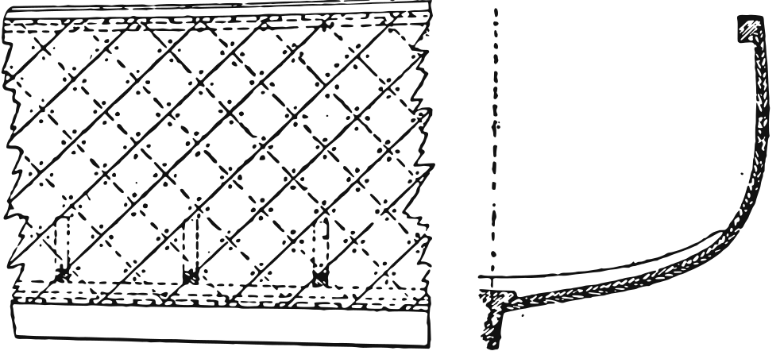
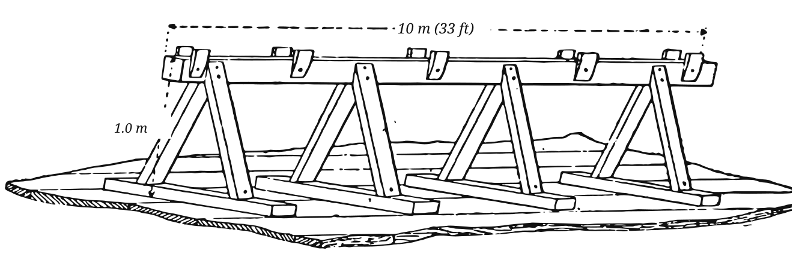
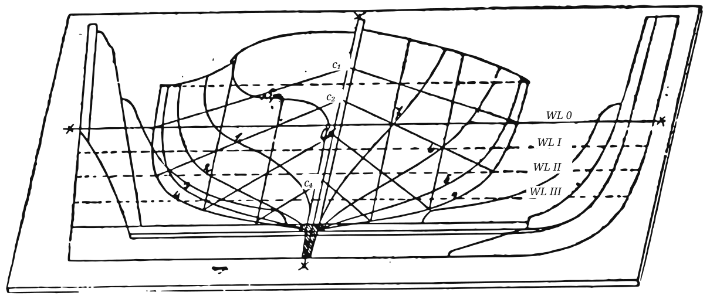

In January 1885 Wassersport opened a series that its editors promised would explain, “drawing by drawing,” how the pleasure boats of the day were actually put together. Its author, Th. Hein, was a practical man; he writes for the amateur who has a shed, a few good tools and the patience to follow instructions, and he takes the reader from the choice of workshop to the last fitting of the rowing seats.
The series ran in six instalments between January and November 1885. It is printed here complete, in a new translation, with every original figure redrawn. Measurements are given as Hein gave them, in metric units, with imperial equivalents added in brackets. Words that a modern builder may not know are explained in the footnotes. — L. Dudakov
Under this heading we intend to publish a series of drawings of boats of various build and arrangement, together with explanations of how they are actually built. We assume that the subject will interest yacht and boat owners, boatbuilders and our wide circle of readers alike: these are our favourites, in which we spend so many happy hours and to which we often trust our lives, and it is well worth the trouble to know them a little better. Our first task shall be to explain, in practical terms, the pleasure boats used in the so-called smaller sport and the different ways in which they are built.
By the manner of planking, three kinds of pleasure boat are distinguished: the clinker-built, the carvel-built and the diagonal-built boat.
In clinker building (Fig. 1) the planks are joined by laying each strake so that it overlaps the one below. They are fastened with copper or galvanised iron nails, which are riveted over small washers, called roves.
In carvel building (Fig. 2) the strakes meet edge to edge. The frames are solid timbers, sawn to the shape of the boat; the two dotted lines in the figure show one of them.
In diagonal building (Fig. 3) the planks run in a double layer at an angle of 45° from the rabbet in the keel to the rabbet in the gunwale: the inner layer slopes aft at 45°, the outer layer forward at 45°. The dotted lines show the inner layer of planking, the solid lines the outer.

Before we begin the actual building of a boat, the preparations — the place where it is to be set up, the building stock and so on — call for a short discussion.
Choose a covered place, a shed or the like, so that the work is not exposed to bad weather and to changes of weather. A timber shed with good light from above and from the sides, and with a floor of boards or of end-grain wood paving, will serve best.
Next, a long wooden trestle — the building stock — must be made to suit the length of the boat; for the ordinary kind of pleasure boat it may be up to 10 m (33 ft) long. This stock is the base on which the boat is built, and serves the same purpose as the slipway does for a large ship. It can be made after the sketch in Fig. 4, in which the dimensions are given in metres.

Now make a floor plan on which the body plan, the stem and the sternpost of the boat are laid off full size. Such a plan, with the body plan, stem and sternpost marked out, is shown in Fig. 5.

The moulds can now be made. As Fig. 6 shows, they are cut from 25 mm (1 in) pine boards to the individual section lines — one mould for each frame — and joined together. Since the body plan shows only one side of the boat, two pieces must be made for each frame. To assemble the complete mould, the height and breadth of the sheer at that frame are also marked on the opposite side of the centreline, and the second half is turned over to meet this point.